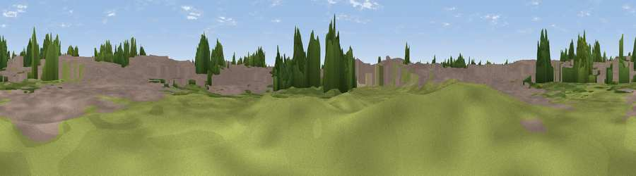

Viewpoint near Daimler Green
#45821 in England · top 96% of its area beats it · near Daimler GreenThe view, rendered

A 360° render of this exact spot computed from the terrain model, tree cover and land cover — summer colours, afternoon light, calibrated against photographs of famous viewpoints. Real trees, hedges and buildings will differ in detail.
The panorama
Grey silhouette: terrain skyline in each direction (720 bearings, Earth curvature and refraction included). Dashed green: skyline with trees (+15 m) and buildings (+8 m) as obstacles. Blue strip: how far the ground is visible on each bearing.
Where the view opens
Wedge length = distance to the farthest visible ground on that bearing (vegetation-aware). Rings at 10, 25 and 50 km.
What fills the view
65% built-up · 22% woodland · 10% grassland · 3% cropland
Angular shares of the visible panorama (visual magnitude), not map area. Landscape diversity 0.41 (0–1 Shannon).
Key numbers
More beautiful places nearby
The staircase of upgrades: each row has a higher view potential than everything closer. Driving times are estimates from straight-line distance, calibrated against real road routing — check an actual route before setting out.
| Place | Direction | Drive | Score |
|---|---|---|---|
| Highest Point | E · 3 km | ~7 min | 19.2 |
| Viewpoint near Daimler Green | WNW · 3 km | ~8 min | 29.8 |
| Viewpoint near Ash Green | NNW · 4 km | ~9 min | 31.2 |
| Viewpoint near Bubbenhall | S · 8 km | ~16 min | 36.6 |
| Wood End Hill | WNW · 9 km | ~18 min | 50.0 |
| Mount Jud | N · 12 km | ~23 min | 62.4 |
| Viewpoint near Ansley Common | N · 14 km | ~25 min | 63.1 |
| Viewpoint near Ansley Common | NNW · 15 km | ~26 min | 69.0 |
52.42351, -1.49770 · source: osm viewpoint · position refined by local search. Computed location — check access rights before visiting.